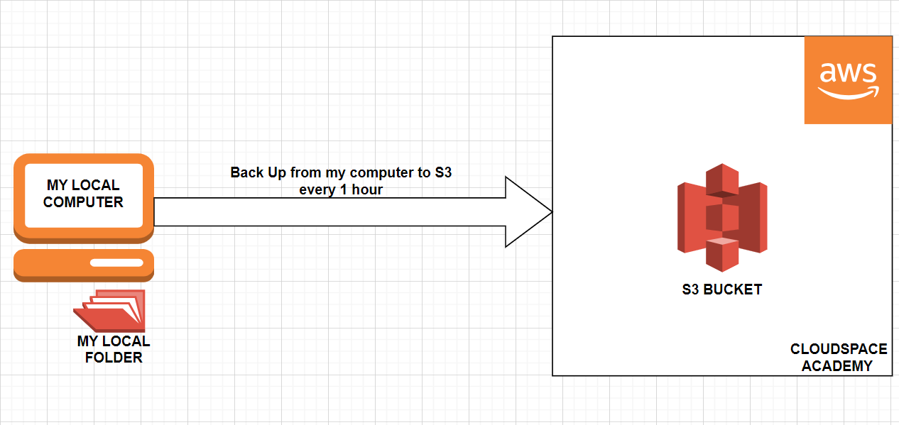
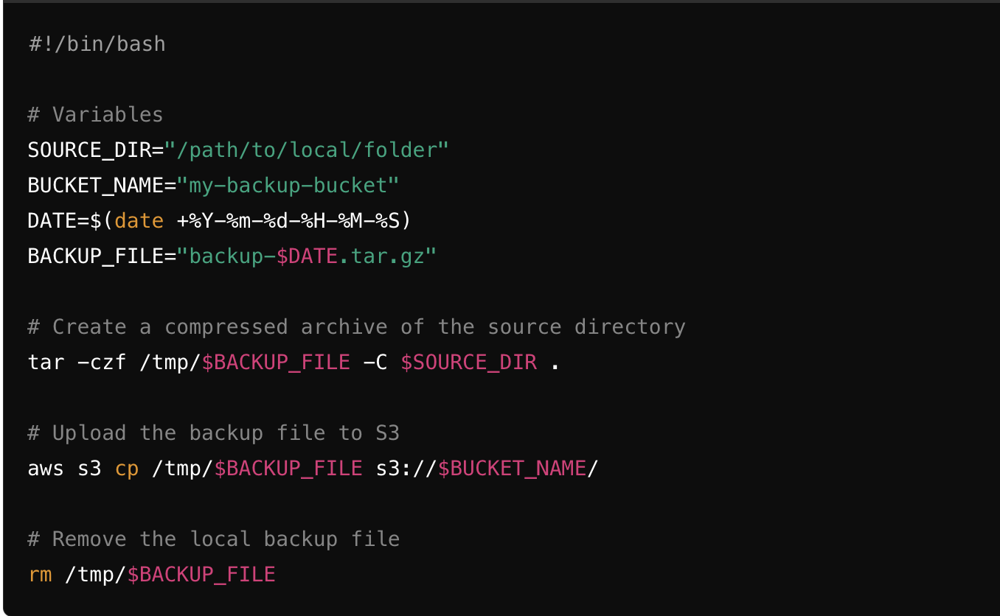
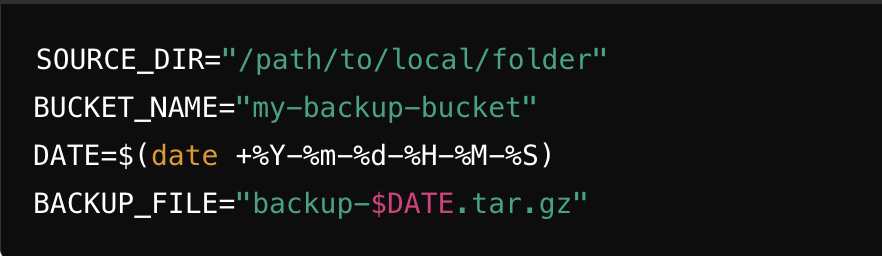
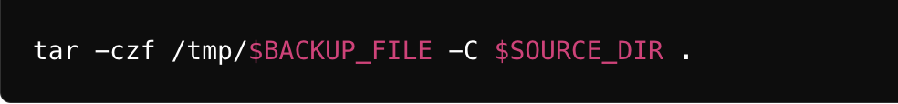
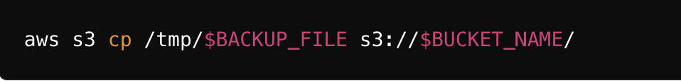
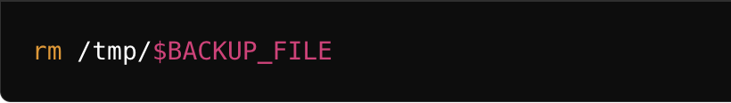

Bash Scripting Party
🚀 Project Overview
In this project, we will explore a DevOps project that involves deploying a Django notes app on an EC2 instance using This project involves creating a bash script that takes the backup of a local folder and sends it to an Amazon S3 bucket every hour. The project aims to teach students the basics of scripting, automation, and using AWS S3 for storage.
🔧 Problem Statement
The task is to develop a solution that ensures a local directory's contents are backed up to Amazon S3 automatically and regularly. This will help in ensuring data durability and accessibility from anywhere. The solution should be simple, efficient, and require minimal manual intervention.
💽 Techonology Stack
● Bash: For scripting
● AWS CLI: For interacting with Amazon S3
● Cron: For scheduling the script to run every hour
📌 Architecture Diagram

🚦 Getting Started
🌟 Prerequisites
Before diving into the project, let’s ensure that we have the necessary prerequisites.
- AWS account.
- AWS CLI.
- Local computer (MacOs or Ubuntu or Windows).
- Bash.
📋 Table of Contents
- Step-1: Setup AWS S3 Bucket
- Step-2: Install and Configure AWS CLI
- Step-3: Create Backup Script
- Step-4: Schedule Script with Cron
- Step-5: Testing
✨ Step-1-Setup-S3-Bucket
- Log in to the AWS Management Console.
- Navigate to S3 Service.
- Create a new bucket with a unique name (e.g., my-backup-bucket).
✨ Step-2-Install-and-Configure-AWS-CLI
- For macOS
A. Install AWS CLI
Using Homebrew (recommended):
brew install awscli
Alternatively, using the bundled installer:
curl "https://awscli.amazonaws.com/AWSCLIV2.pkg" -o "AWSCLIV2.pkg"
sudo installer -pkg AWSCLIV2.pkg -target /
B. Configure AWS CLI
aws configure
Provide your AWS Access Key, Secret Key, region, and output format.
- For Ubuntu
A. Install AWS CLI
Using the package manager:
sudo apt-get update
sudo apt-get install awscli -y
Alternatively, using the bundled installer:
curl "https://awscli.amazonaws.com/awscli-exe-linux-x86_64.zip" -o "awscliv2.zip"
unzip awscliv2.zip
sudo ./aws/install
B. Configure AWS CLI
aws configure
Provide your AWS Access Key, Secret Key, region, and output format.
- For Windows
A. Install AWS CLI
Download the AWS CLI MSI installer from the official website.
Run the downloaded MSI installer and follow the instructions to complete the installation.
B. Configure AWS CLI
Open Command Prompt or PowerShell.
aws configure
Provide your AWS Access Key, Secret Key, region, and output format.
✨ Step-3-Create-Backup-Script
Create a bash script named 'backup_to_s3.sh:'
#!/bin/bash
# Variables
SOURCE_DIR="/path/to/local/folder"
BUCKET_NAME="my-backup-bucket"
DATE=$(date +%Y-%m-%d-%H-%M-%S)
BACKUP_FILE="backup-$DATE.tar.gz"
# Create a compressed archive of the source directory
tar -czf /tmp/$BACKUP_FILE -C $SOURCE_DIR .
# Upload the backup file to S3
aws s3 cp /tmp/$BACKUP_FILE s3://$BUCKET_NAME/
# Remove the local backup file
rm /tmp/$BACKUP_FILE

Make the script executable:
chmod +x backup_to_s3.sh
Explanation of Commands:
A. Define Variables

● SOURCE_DIR: Path to the local directory you want to back up.
● BUCKET_NAME: Name of your S3 bucket.
● DATE: Current date and time in YYYY-MM-DD-HH-MM-SS format to create unique backup filenames.
● BACKUP_FILE: Name of the backup file that includes the date and time.
B. Create a Compressed Archive of the Source Directory

● tar: Command to create an archive.
● -czf: Options to create a compressed (-c), gzip (-z) file with the name specified (-f).
● /tmp/$BACKUP_FILE: : Path and name of the output file.
● -C $SOURCE_DIR .: Change to the source directory and include all its contents in the archive.
C. Upload the Backup File to S3

● aws s3 cp: AWS CLI command to copy files to S3.
● /tmp/$BACKUP_FILE: Path to the local backup file.
● s3://$BUCKET_NAME/: Destination S3 bucket.
D. Remove the Local Backup File

● rm: Command to remove/delete files.
● /tmp/$BACKUP_FILE: Path to the local backup file to be deleted after upload.
✨ Step-4-Schedule-Script-with-Cron
Cron is a time-based job scheduler in Unix-like operating systems. It allows users to schedule jobs (commands or scripts) to run automatically at specified intervals or times. Cron is widely used for automating system maintenance and administration tasks, such as backups, updates, and periodic monitoring.
-
Open the cron file In the pipeline script, add the following code to clone the code from your repository:
```bash
crontab -e```
-
Add the following line to schedule the script to run every hour:
bash 0 * * * * /path/to/backup_to_s3.sh >> /var/log/backup_to_s3.log 2>&1
● 0 * * * *: Schedule to run at the start of every hour.
● /path/to/backup_to_s3.sh: Path to the backup script.
● >> /var/log/backup_to_s3.log 2>&1: Redirect stdout and stderr to a log file for debugging and monitoring.
✨ Step-5-Testing
-
Manually run the script to ensure it works:
bash ./backup_to_s3.sh -
Check the S3 bucket to confirm the backup file is uploaded.
-
Monitor the log file /var/log/backup_to_s3.log for any errors or confirmations that the script runs every hour.